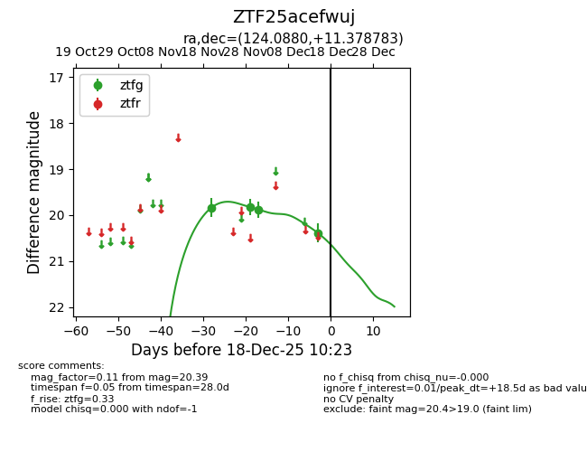
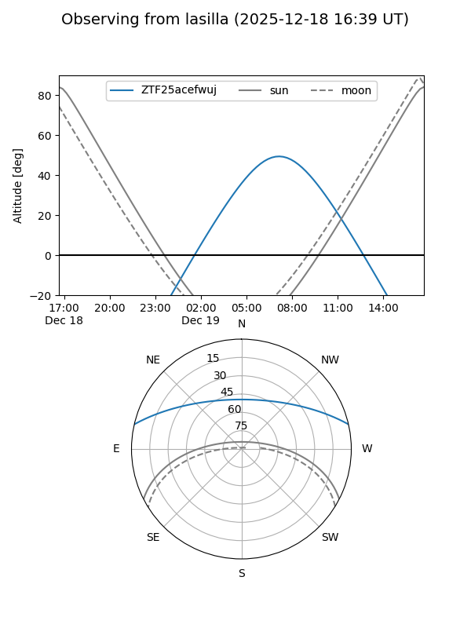
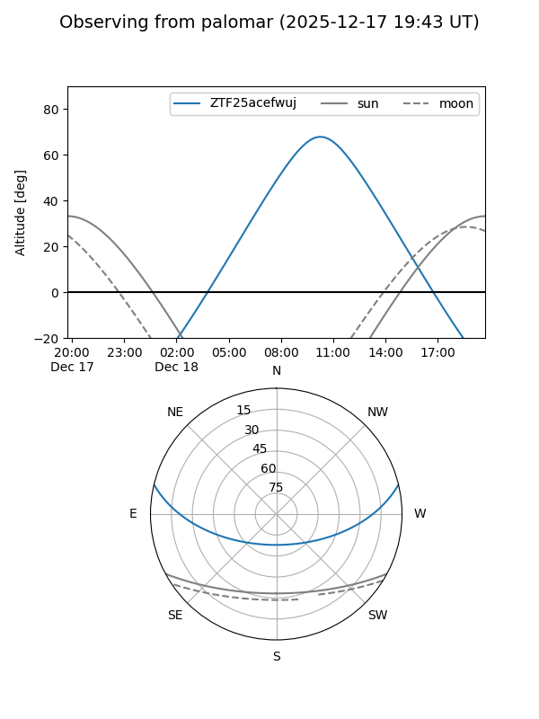

ZTF25acefwuj
Target ZTF25acefwuj at 2025-12-18 11:17
Aliases and brokers:
FINK: fink-portal.org/ZTF25acefwuj
Lasair: lasair-ztf.lsst.ac.uk/objects/ZTF25acefwuj
ALeRCE: alerce.online/object/ZTF25acefwuj
alt names
ZTF25acefwuj (ztf,fink_ztf)
Coordinates:
equatorial (ra, dec) = 124.0880,+11.37878
equatorial (HMS+DMS) = 08:16:21.13,+11:22:43.62
galactic (l, b) = (212.0713,+23.94654)
Photometry
last ztfg=20.39
4 ztfg detections
Lightcurve

Visibility


Additional plots